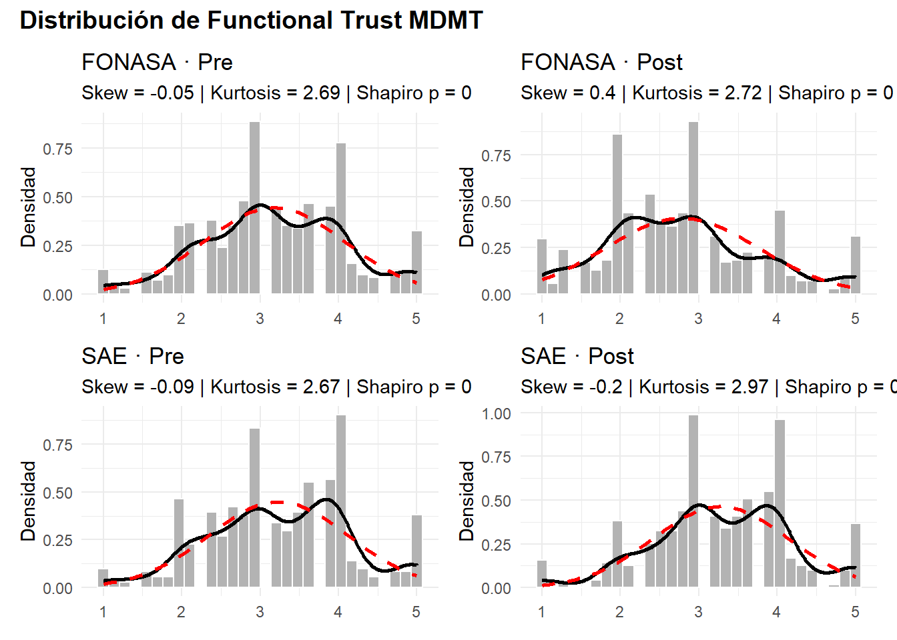
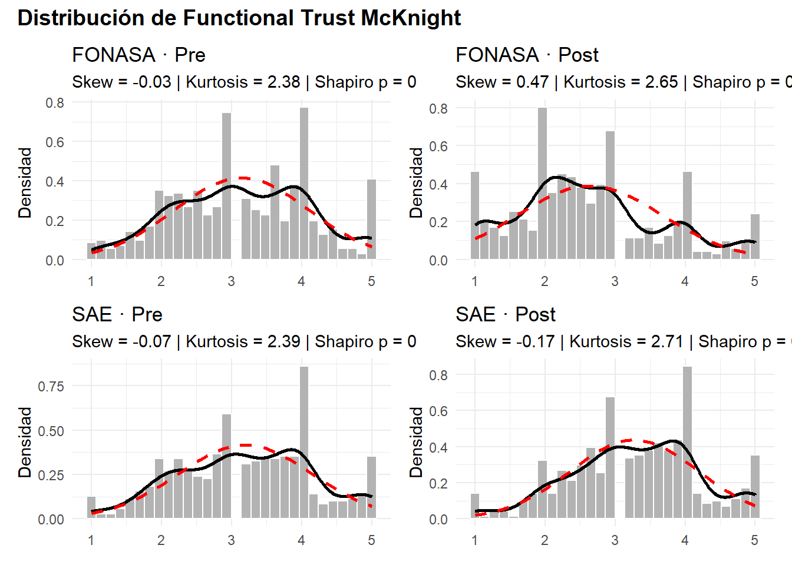
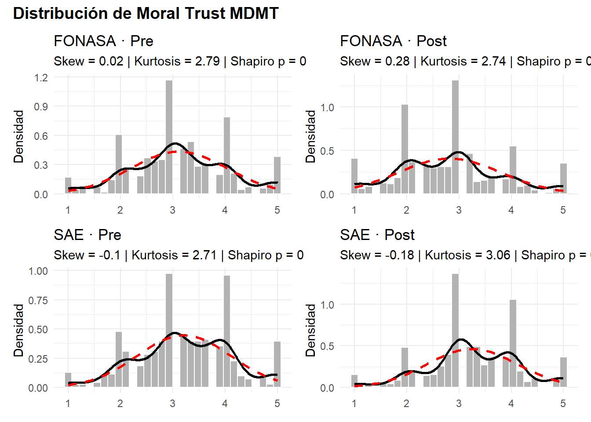
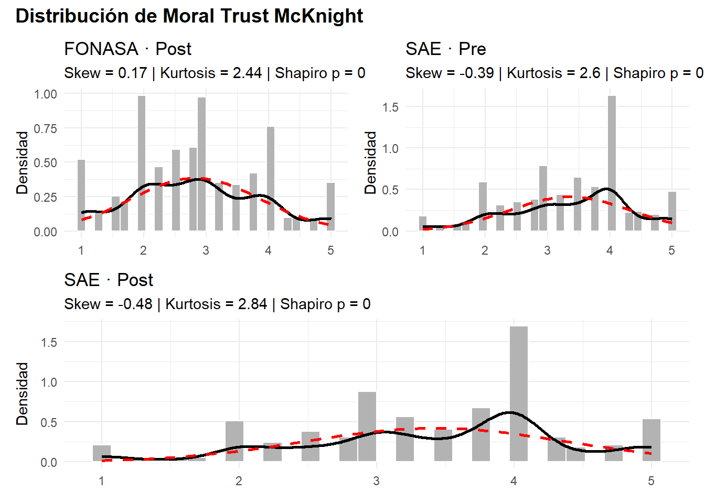
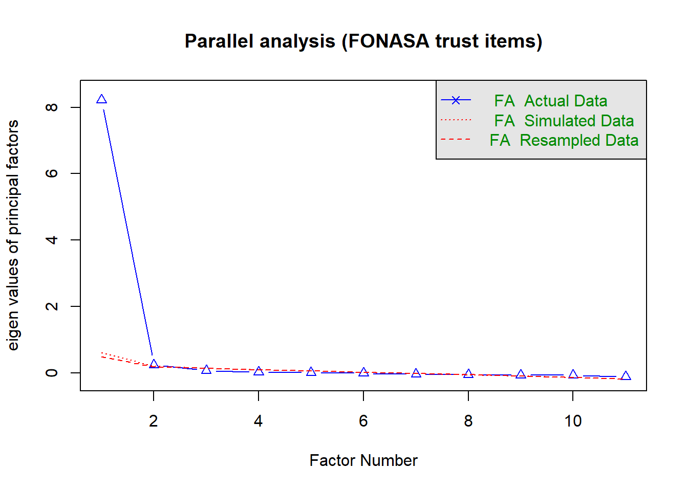
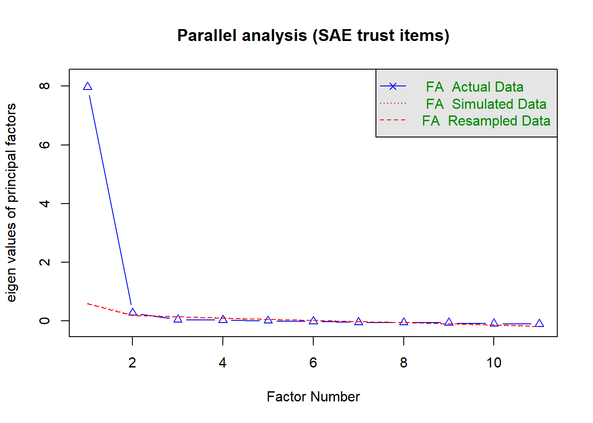

| Constructo | Items | Cronbach α/Split-Half) | Mean | Median | SD | Min | Max |
|---|---|---|---|---|---|---|---|
| FONASA | |||||||
| Ex ante: Comprensión objetiva | 8 | 0.667 | 3.535 | 4.000 | 1.165 | 0 | 6 |
| Ex ante: Comprensión subjetiva | 4 | 0.921 | 2.980 | 3.000 | 0.982 | 1 | 5 |
| Ex ante: Functional Trust MDMT | 6 | 0.936 | 3.179 | 3.167 | 0.900 | 1 | 5 |
| Ex ante: Functional Trust McKnight | 7 | 0.953 | 3.143 | 3.143 | 0.961 | 1 | 5 |
| Ex ante: Moral Trust MDMT | 6 | 0.952 | 3.117 | 3.000 | 0.917 | 1 | 5 |
| Ex pos: Comprensión objetiva | 11 | 0.734 | 6.934 | 7.000 | 2.113 | 1 | 11 |
| Ex pos: Comprensión subjetiva | 10 | 0.921 | 2.945 | 2.875 | 0.940 | 1 | 5 |
| Ex pos: Functional Trust MDMT | 6 | 0.948 | 2.782 | 2.667 | 0.979 | 1 | 5 |
| Ex pos: Functional Trust McKnight | 7 | 0.959 | 2.637 | 2.500 | 1.028 | 1 | 5 |
| Ex pos: Moral Trust MDMT | 6 | 0.964 | 2.818 | 3.000 | 0.980 | 1 | 5 |
| Ex pos: Moral Trust McKnight | 4 | 0.928 | 2.830 | 2.750 | 1.035 | 1 | 5 |
| SAE | |||||||
| Ex ante: Comprensión objetiva | 6 | 0.627 | 4.088 | 4.000 | 1.520 | 0 | 6 |
| Ex ante: Comprensión subjetiva | 4 | 0.928 | 3.198 | 3.000 | 0.971 | 1 | 5 |
| Ex ante: Functional Trust MDMT | 6 | 0.931 | 3.232 | 3.167 | 0.890 | 1 | 5 |
| Ex ante: Functional Trust McKnight | 7 | 0.946 | 3.195 | 3.143 | 0.959 | 1 | 5 |
| Ex ante: Moral Trust MDMT | 6 | 0.944 | 3.213 | 3.167 | 0.894 | 1 | 5 |
| Ex ante: Moral Trust McKnight | 4 | 0.919 | 3.359 | 3.500 | 0.965 | 1 | 5 |
| Ex pos: Comprensión objetiva | 6 | 0.713 | 4.340 | 5.000 | 1.527 | 0 | 6 |
| Ex pos: Comprensión subjetiva | 9 | 0.918 | 3.240 | 3.250 | 0.939 | 1 | 5 |
| Ex pos: Functional Trust MDMT | 6 | 0.931 | 3.232 | 3.167 | 0.890 | 1 | 5 |
| Ex pos: Functional Trust McKnight | 7 | 0.948 | 3.275 | 3.286 | 0.913 | 1 | 5 |
| Ex pos: Moral Trust MDMT | 6 | 0.954 | 3.252 | 3.167 | 0.863 | 1 | 5 |
| Ex pos: Moral Trust McKnight | 4 | 0.939 | 3.423 | 3.500 | 0.948 | 1 | 5 |
Validación de los constructos
Descripción y validez de los datos
(IRT)
¿Son las distribuciones normales?






Factorial confianzas

Parallel analysis suggests that the number of factors = 2 and the number of components = NA 
Parallel analysis suggests that the number of factors = 2 and the number of components = NA Parallel analysis suggests that the number of factors = 2 and the number of components = NA | Factor 1 | Factor 2 | |
| fonasa_pos_trust_belief_reliab_1 | 0.78 | 0.14 |
| fonasa_pos_trust_belief_reliab_2 | 0.78 | 0.07 |
| fonasa_pos_trust_belief_reliab_3 | 0.85 | 0.08 |
| fonasa_pos_trust_belief_reliab_4 | 0.81 | 0.03 |
| fonasa_pos_trust_belief_func_1 | 0.47 | 0.46 |
| fonasa_pos_trust_belief_func_2 | 0.55 | 0.36 |
| fonasa_pos_trust_belief_func_3 | 0.76 | 0.15 |
| fonasa_pos_trust_belief_help_1 | 0.04 | 0.84 |
| fonasa_pos_trust_belief_help_2 | 0.02 | 0.88 |
| fonasa_pos_trust_belief_help_3 | 0.45 | 0.48 |
| fonasa_pos_trust_belief_help_4 | 0.31 | 0.59 |
| Cronbach's α | 0.96 | 0.93 |
Parallel analysis suggests that the number of factors = 2 and the number of components = NA | Factor 1 | Factor 2 | |
| sae_pos_trust_belief_reliab_1 | 0.07 | 0.82 |
| sae_pos_trust_belief_reliab_2 | 0.09 | 0.78 |
| sae_pos_trust_belief_reliab_3 | 0.06 | 0.84 |
| sae_pos_trust_belief_reliab_4 | 0.16 | 0.62 |
| sae_pos_trust_belief_func_1 | 0.47 | 0.42 |
| sae_pos_trust_belief_func_2 | 0.51 | 0.40 |
| sae_pos_trust_belief_func_3 | 0.28 | 0.60 |
| sae_pos_trust_belief_help_1 | 0.89 | -0.00 |
| sae_pos_trust_belief_help_2 | 0.80 | 0.11 |
| sae_pos_trust_belief_help_3 | 0.76 | 0.16 |
| sae_pos_trust_belief_help_4 | 0.75 | 0.15 |
| Cronbach's α | 0.95 | 0.93 |
| Sistema | n_items | Cronbach_alpha |
|---|---|---|
| FONASA | 11 | 0.970 |
| SAE | 11 | 0.966 |